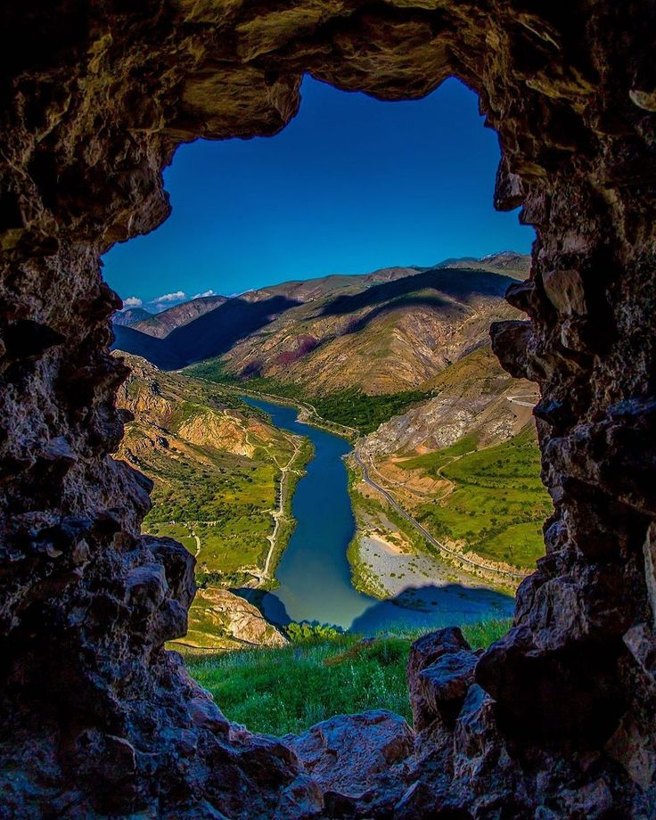
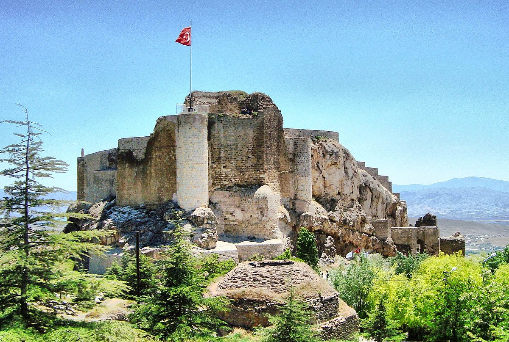

Elazığ
Hazar'ın mavisi, Harput'un efsanesi Elazığ'da türkülerle yankılanır.

Elazığ doğal güzellikleri arasında kebabı önemli bir yer tutar.
Elazığ tarihi yapılarıyla dikkat çeker ve özellikle pidesi ile bilinir.
Elazığ ili, Türkiye'deki en eski yerleşim yerlerinden biridir ve geleneksel el sanatları ile tanınır.

Elazığ Arkeoloji ve Etnografya Müzesi
Bölgenin zengin tarihini ve kültürel mirasını sergileyen müze.

Kurşunlu Cami
Osmanlı döneminden kalma tarihi cami.

Harput Kalesi
Urartu döneminden kalma tarihi kale.